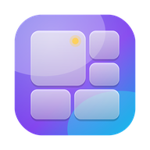
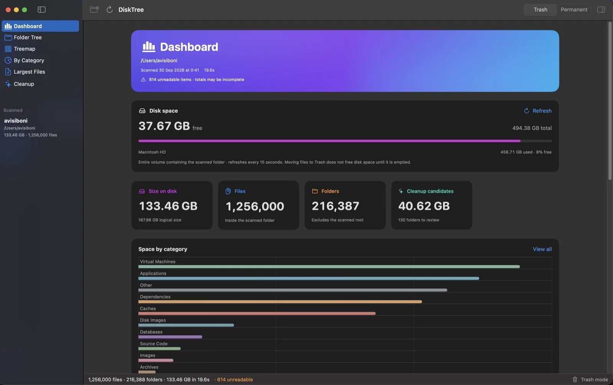
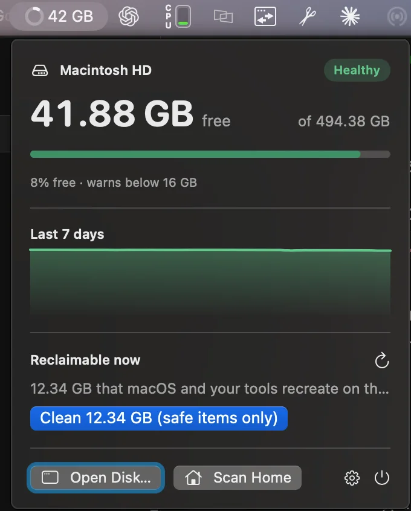
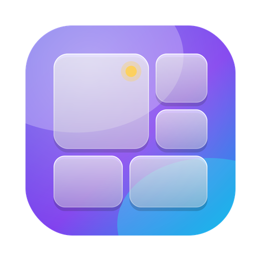

Blazing scanner
Uses the macOS getattrlistbulk(2) system call and fans out across every core. Sizes are bytes allocated on disk, not guesses.

Headroom100% free · Every feature unlocked · Open source
Headroom (formerly DiskTree) is a fast, native disk space analyzer that turns a crowded drive into a map you can read, finds duplicate files, tells you what is safe to delete, and clears the junk in seconds.

Scan. Parallel getattrlistbulk reads millions of files in seconds.
Understand. Tree, treemap and categories show exactly where space went.
Clean. Safety badges say what is safe, then one click removes it.
No Pro tier. No subscription. No lifetime upgrade. No trial that ends. No “upgrade to clean” button. The features other Mac disk cleaners keep behind a paywall are simply part of Headroom.
Made to be enjoyed, not sold. No ads, no accounts, no analytics. If you like it, a GitHub star is the only payment we'd ever ask for.
A TreeSize- and WizTree-style analyzer, built natively for macOS with SwiftUI and AppKit.
Uses the macOS getattrlistbulk(2) system call and fans out across every core. Sizes are bytes allocated on disk, not guesses.
Built on NSOutlineView, so folders with hundreds of thousands of items expand instantly. Sort by size, share, files, safety or date.
A squarified map of your disk. Color by category, file age or deletion safety. Double-click to zoom, right-click to act.
Files that exist more than once, compared byte for byte and ranked by the space one copy gives back. Keep newest, oldest or pick by hand; one copy always stays.
A rule base of about 150 macOS and developer locations explains what a folder is and whether removing it is safe.
Finds DerivedData, node_modules, npm/pnpm/pip/Gradle/Cargo caches, build output, logs and more. You review before anything goes.
Everything runs locally. No account, no analytics, no cloud. Open source under the MIT license.
Real screenshots from a real 133 GB home folder.



Every recognized item gets a plain-language verdict, so you never have to guess.
Regenerable data such as caches and package stores.
Rebuilt on demand, may take time to recreate.
Contains settings or user data. Review first.
Critical system or irreplaceable data.
Trash mode is the default and is fully recoverable. Permanent mode uses a parallel rimraf-style engine for huge folders and cannot be undone.
APFS has no equivalent of NTFS's Master File Table, so Headroom does the next best thing.
getattrlistbulk(2) returns names, types, dates and allocated sizes for whole directories in one call.unlinkat in parallel, deepest folders last.~20 s
to scan 1,256,000 files in 216,000 folders (133 GB) on a MacBook.
Prefer to build it yourself? Clone the repo and run ./build.sh run (Xcode 15+). Requires macOS 14 Sonoma or later. Grant Full Disk Access only if you want to scan Mail, Messages or Safari data.
No. There is no Pro tier, subscription, lifetime purchase, trial or in-app purchase. Every feature is free and unlocked for everyone: the treemap, one-click cleanup, developer deep scan, safety hints, Trash-first deletion and fast permanent deletion.
Yes, this one. Headroom is a free, open-source Mac disk space analyzer and cleaner that never locks cleanup or developer scans behind a paywall, and never asks for an account or payment.
Yes. Headroom was called DiskTree until version 1.0 (October 2026): same app, same settings, same bundle id, so updates install in place. It is not affiliated with the paid DiskTree app at disktree.org or with any other app named Headroom. The code is at github.com/Ryware/Headroom.
Files are grouped by size, then by a hash of their first 64 KB, then by a full SHA-256 of the whole file. Only files that still match after the last step are listed, so every group is byte-for-byte identical. Files under 1 MB and files inside app bundles are skipped, and Headroom always keeps one copy of each file unless you turn that guard off.
Headroom is a free, open-source, native macOS app that shows what is using space on your Mac. It scans a folder or disk, visualizes the result as a folder tree, treemap and category charts, explains whether items are safe to delete and helps you clean them up.
Yes. It is MIT-licensed with no ads, subscriptions, accounts, in-app purchases or analytics. It was made to be enjoyed.
Open Headroom, choose Home or Startup Disk and wait for the scan. The dashboard shows free and used space and the biggest categories, the folder tree lists folders by size, and the treemap draws every file as a rectangle sized by how much space it uses.
Usually yes, because they are regenerable: node_modules can be reinstalled, Xcode DerivedData is rebuilt on the next build and caches are recreated on demand. Headroom labels recognized items Safe, Usually safe, Caution or Never and explains the effect. Keep Trash mode on if you want to be able to undo.
Trash mode moves items to the macOS Trash so you can restore them until you empty it. Permanent mode removes them immediately with a fast parallel engine like rimraf and cannot be undone.
It uses getattrlistbulk(2) and scans directories in parallel across all cores. A home folder with about 1.26 million files and 216,000 folders scanned in roughly 20 seconds.
No. Scanning and analysis happen entirely on your Mac. There is no account system, analytics SDK or cloud service.
Headroom is a free, native Mac app in the same spirit: a fast scan, a sortable size tree and a treemap, plus safety explanations and one-click developer cleanup.
macOS 14 Sonoma or newer on Apple silicon or Intel. Full Disk Access is only needed for protected locations such as Mail, Messages and Safari data.
